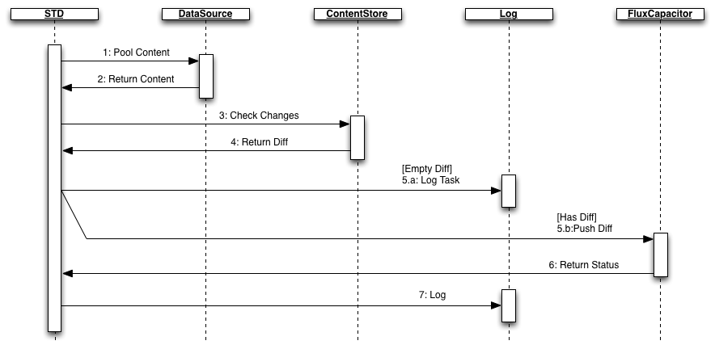

Check Content Changes
Verify what has changed since last visit.
Goal
Check configured data sources for changes in content from the previous integration.
- Pool Content STD-DataSource: connect to external Data Source and load content
- Data can be loaded from CSV, XML or JSON files, or from SQL or SPARQL query results (COEUS-like)
- Return Content DataSource-STD: The Data Source returns with the requested content
- Check Changes STD-ContentStore: The STD imports the data into the internal Content Store and check if there have been any changes since the last update (the diff)
- External content is processes from the initial queries in a COEUS-like approach: XPath, JSONPath, SQL variables, column numbers…
- Return Diff ContentStore-STD: The ContentStore analyses the newly submitted content and returns a diff with the unique new content
- Push Diff STD-FluxCapacitor: If new content was actually found, it is sent to Flux Capacitor for processing
- The FluxCapactior can receive every and any format for further processing, meaning that it can be a service hook for external systems supporting this paradigm


{kind=link}
{kind=link}